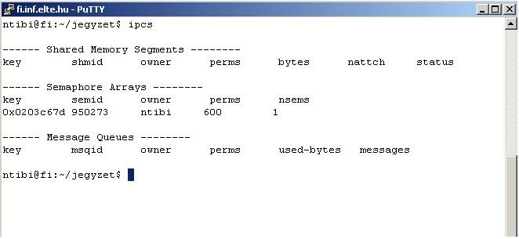

A párhuzamosság kezelése, szemaforok a gyakorlatban, alapvető megoldások
A szemaforok használata
A szemaforkészletnek és a szemaforkészlet szemaforjainak kezelése, a semctl függvény
A „semctl” függvény segítségével tudunk információt kérni a szemaforkészletről vagy annak egy szemaforjáról, beállítani annak értékét anélkül, hogy blokkolódna a folyamat (kezdeti beállítás). A „semctl” függvény segítségével tudjuk a szemaforkészletet törölni.
#include <sys/types.h>
#include <sys/ipc.h>
#include <sys/sem.h>
int semctl(int semid, int semnum, int cmd, union semun arg);
A semctl függvény paraméterei:
semid: a szemaforkészlet azonosítója (a semget függvény adta meg).
semnum: a szemaforindex a szemaforkészletben.
cmd: parancs.
IPC_STAT, IPC_SET: a szemaforkészlet adatainak a lekérdezése vagy módosítása a negyedik paraméterben megadott struktúra segítségével.
SETVAL: a szemaforkészlet adatainak a módosítása a negyedik paraméterben megadott semun struktúra „val” mezőjére, feloldja a várakozó folyamatok blokkolását, ha szükséges.
GETALL, SETALL: a szemaforkészlet szemaforjainak lekérdezése vagy beállítása.
IPC_RMID: a szemaforkészlet törlése. A blokkolt folyamatok blokkolása feloldódik.
arg: A negyedik paraméternek használható semun típusú struktúra. Ennek a megadása opcionális.
A semctl függvény visszatérési értéke;
Sikeres végrehajtás esetén nulla.
Hiba esetén -1, illetve beállítja a globális errno hibaértéket.
A semctl függvénnyel tudjuk a szemaforkészletet és a szemaforkészlet szemaforjait kezelni, ám a szemaforkészlet kezelésekor különböző hibák merülhetnek fel. A semctl függvény beállítja a globális errno hibaértéket, ami a szokásos értékeken kívül például a következő értékekkel bővül ki:
Konstans
Leírás
EACCES
Nincs jogosultságunk a művelet végrehajtásához.
EFAULT
Az „arg.buf” és az „arg.array” nem elérhető.
EINVAL
Hibás a „cmd” vagy a „semid” paraméter.
EIDRM
A szemaforkészlet törölve lett.
EPERM
Nincs jogunk végrehajtani a kért műveletet az IPC_RMID, vagy az IPC_SET esetén.
ERANGE
A szemaforkészlet egyik szemaforjának az új értéke érvénytelen.
További hibaértékek a referenca-kézikönyvben (manual) találhatók.
A semun típusú struktúra a sys/sem.h header fájlban van meghatározva. A semun típusú struktúra a következőképpen épül fel:
union semun {
int val; /* A SETVAL-hoz megadott érték. */
struct semid_ds *buf; /* Az IPC_STAT-hoz, és az IPC_SET-hez
megadott buffer. */
unsigned short *array; /* A GETALL-hoz, és a SETALL-hoz megadott
tömb. */
struct seminfo *__buf; /* Az IPC_INFO-hoz megadott buffer. */
};
A semid_ds típusú struktúra a sys/sem.h header fájlban van meghatározva. A semid_ds típusú struktúra a következőképpen épül fel:
struct semid_ds {
struct ipc_perm sem_perm; /* Definiálja a tulajdonost, és
a jogosultságokat. */
time_t sem_otime; /* Az utolsó semop művelet időpontja. */
time_t sem_ctime; /* Az utolsó módosítás időpontja. */
unsigned short sem_nsems; /* A szemaforkészletben található
szemaforok száma. */
};
A ipc_perm típusú struktúra a sys/ipc.h header fájlban van meghatározva. A ipc_perm típusú struktúra a következőképpen épül fel:
struct ipc_perm {
key_t key; /* A létrehozáskor használt kulcs. */
uid_t uid; /* A tulajdonos UID azonosítója. */
gid_t gid; /* A tulajdonos GID csoportazonosítója. */
uid_t cuid; /* A létrehozó UID azonosítója. */
gid_t cgid; /* A létrehozó GID csoportazonosítója. */
unsigned short mode; /* A jogosultságok megadása. Ugyanolyan,
mint a fájloknál, csak még plusz
jogosultságként megjelennek az SHM_DEST,
és az SHM_LOCKED kapcsolók. */
unsigned short seq; /* A sorozatszám. */
};
Az ipcs shell parancs segítségével tudjuk megnézni az IPC-eszközöket (megosztott memória, szemafor, üzenetsor). Törölni az ipcrm parancs segítségével tudunk.
Példa a System V szemaforok használatára: a gyártó-fogyasztó probléma
Most lássuk a gyártó-fogyasztó problémának a szimulációját System V szemaforok segítségével! A tárolóba való berakás és a kivétel műveletétől tekintsünk el a példánkban. Használjunk két szemafort az üres helyek és a foglalt helyek számlálására! Elegendő lesz egyetlen szemaforkészletet használnunk két szemaforral. A berakás és kivétel a két szemaforon egyszerre végzett növelés, illetve csökkentés lesz.
")
")
")
")